Case study at a glance
- Problem
- Connect commerce data to revenue, delivery and customer questions.
- Approach
- Designed a Snowflake/dbt warehouse variant with aggregated KPI marts.
- Implementation
- Tools and techniques: Cloud Data Warehouse, Snowflake, dbt-core, Power BI, Python, Serverless Tasks.
- Outcome
- Star-schema models and Power BI analysis; evidence scope is explained in the case study.
Project Overview
This page preserves the Snowflake + dbt + Serverless Tasks architecture variant. The supplied Olist analysis report documents a separate PostgreSQL + dlt + dbt + Airflow/Docker implementation. Shared analytical concepts are supported by that report; this variant's deployment and runtime performance require separate execution evidence.
The Olist Cloud Data Warehouse is a full-stack, Cloud-native ELT platform built on top of the publicly available Olist Brazilian E-Commerce dataset on Kaggle. The dataset contains approximately 100,000 orders, spanning customers, sellers, products, payments, reviews, and geolocation data across Brazil.
The project delivers three tiers of analytical value: a Kimball Star Schema (7 Dimensions + 4 Facts) for ad-hoc analysis, Aggregated KPI Marts aligned to a Balanced Scorecard framework (Platform / Commercial / Customer perspectives), and a Power BI dashboard suite surfacing actionable insights on GMV trends, delivery performance, seller health, and customer RFM segmentation.
ELT Architecture
The pipeline follows a modern ELT (Extract-Load-Transform) pattern — raw data is loaded directly into Snowflake first, then transformed in-warehouse using dbt. This leverages Snowflake's elastic compute for all heavy transformations instead of bottlenecking on a local machine.
Technical Highlights
Why Snowflake over SQL Server + Docker?
The v1 pipeline ran on a single SQL Server instance orchestrated by Dockerized Airflow. While functional, it introduced operational friction: Docker container management, SQL Server licensing constraints, and a tightly coupled compute/storage architecture where warehouse size directly bottlenecked transformation throughput.
the local machine.
Data Layer Deep Dive
Layer 1 — RAW (Extract & Load via Python dlt)
The dlt (data load tool) library handles CSV-to-Snowflake ingestion with
a streaming Generator pattern. Each CSV file is read in 10,000-row chunks, yielding
records to the dlt pipeline — avoiding a full-file DataFrame during CSV reading. Memory usage has not been benchmarked.
Layer 2 — DWH (Kimball Star Schema via dbt-core)
The dbt-core project transforms RAW data into a Kimball-modeled Star Schema:
7 Dimension tables and 4 Fact tables. All surrogate keys
use dbt_utils.generate_surrogate_key (MD5 hash), and deduplication leverages
Snowflake's QUALIFY clause — a cleaner alternative to the subquery-based
ROW_NUMBER() ... WHERE rn = 1 pattern.
MD5 Surrogate Keys
dbt_utils.generate_surrogate_key produces deterministic, reproducible hash keys — no
auto-increment dependency.
QUALIFY Dedup
Snowflake's QUALIFY ROW_NUMBER() OVER() filters duplicates inline without a CTE wrapper —
fewer lines, same result.
Date Spine Generator
TABLE(GENERATOR(ROWCOUNT=>3000)) dynamically generates a continuous date dimension
spanning the entire dataset range.
dbt Data Tests
unique, not_null, relationships, and
dbt_utils.expression_is_true guard every model against regressions.
Star Schema Data Model
The DWH layer materializes as a classic Kimball Star Schema: 7 Dimensions (dim_customer, dim_seller, dim_product, dim_geolocation, dim_order_status, dim_payment_type, dim_date) connected to 4 Fact tables (fact_order_item_sales, fact_order_delivery, fact_payments, fact_reviews) via MD5 surrogate keys.
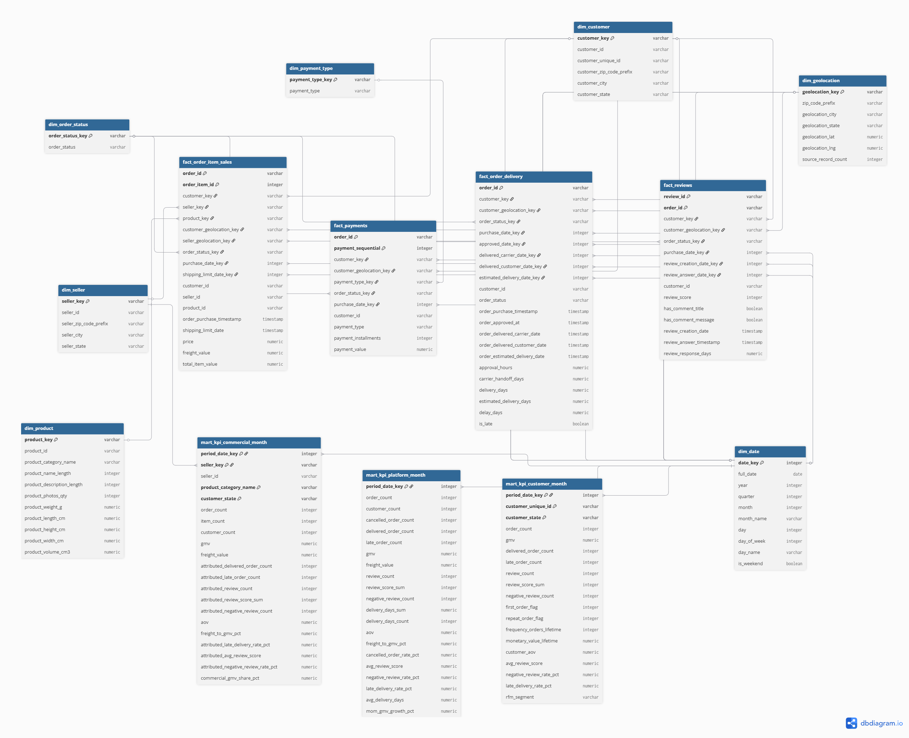
View full size ↗Layer 3 — KPI Marts (Aggregated BSC Analytics)
Three aggregated KPI Marts sit on top of the Star Schema, aligned to a Balanced Scorecard (BSC) framework. Each mart pre-computes derived metrics at monthly grain — providing pre-aggregated inputs for dashboard queries. Dashboard latency has not been benchmarked.
fact_kpi_platform_month
Platform-wide KPIs: GMV, Order Count, AOV, Late Delivery Rate, Avg Review Score, MoM Growth via
LAG().
fact_kpi_commercial_month
Seller × Category × State drill-down: GMV share %, Freight-to-GMV ratio, attributed delivery & review metrics.
fact_kpi_customer_month
Customer-level: RFM Segmentation, lifetime frequency/monetary, repeat purchase flag, customer AOV.
The report uses recency, frequency and monetary measures, with segments including High Value One-Time and Champions. Reproducible segment definitions and notebook links are pending source confirmation.
Serverless Orchestration
The entire refresh pipeline is orchestrated by Snowflake Serverless Tasks — a zero-ops, native DAG engine that eliminates the need for Airflow, Docker, or any external scheduler. Three tasks form a sequential dependency chain, triggered daily at 02:00 AM (Asia/Ho_Chi_Minh).
TSK_01 — Refresh Dimensions
Root task. Recreates all 7 Dimension tables from RAW. CRON schedule: 0 2 * * *.
TSK_02 — Refresh Facts
Child task, runs AFTER TSK_01. Rebuilds 4 Fact tables with FK lookups to freshly loaded
Dimensions.
TSK_03 — Refresh KPIs
Final child, runs AFTER TSK_02. Aggregates KPI Marts from completed DWH layer.
The task chain above describes the warehouse refresh variant. CSV ingestion and dbt execution need their own deployment configuration. The supplied report uses an Airflow DAG for ingestion, transformation and testing; it does not verify this Serverless Tasks setup or its operating cost.
Business Impact & Insights
The KPI Marts power a Balanced Scorecard dashboard framework delivering actionable insights across three strategic perspectives. Below are key findings surfaced by the platform.
📈 Platform Perspective
- MoM GMV Tracking: Month-over-Month Gross Merchandise Value growth is computed via
LAG()window function — supporting comparison of revenue trends over time. - Late Delivery Rate: Platform-wide late delivery rate is tracked monthly, revealing a critical problem cluster between 2017-11 and 2018-03 where rates spiked significantly.
- Cancellation Exposure: Cancelled order rate and refund exposure are quantified at platform level — identifying months with elevated operational loss.
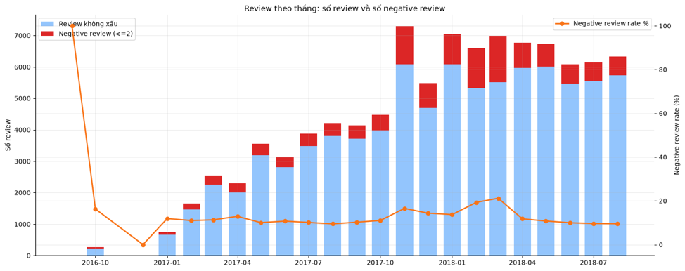
View full size ↗🏪 Commercial Perspective
- Seller Lifecycle Analysis: New vs. active seller tracking reveals that long-tenure sellers ("seller dài hạn") represent a minority of the seller base but contribute a disproportionately large share of total GMV.
- Category Drill-down: GMV share, freight-to-GMV ratio, and attributed late delivery rates are broken down by product category — enabling targeted supply chain optimization.
- Risk Breakdown: Late delivery rates are attributed to specific seller × state combinations, pinpointing high-risk corridors for logistics intervention.
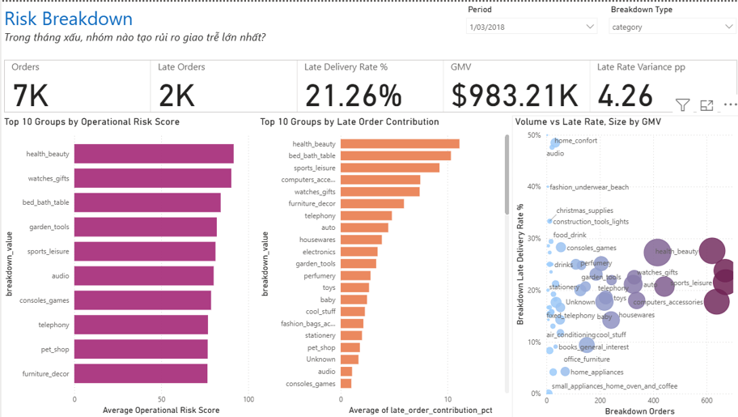
View full size ↗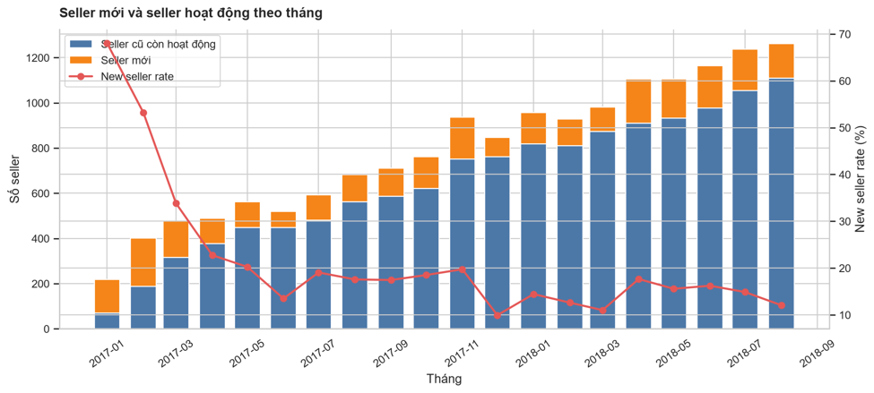
View full size ↗👤 Customer Perspective
- RFM Segmentation: The report compares customers using recency, frequency and monetary measures, including High Value One-Time and Champions segments. Notebook definitions are needed to reproduce the segment assignments.
- Repeat Purchase Flag: A
repeat_order_flagtracks whether a customer has ordered in a previous period — critical for retention rate calculations. - Customer AOV: Average Order Value is computed per customer per month, enabling identification of high-value acquisition channels.
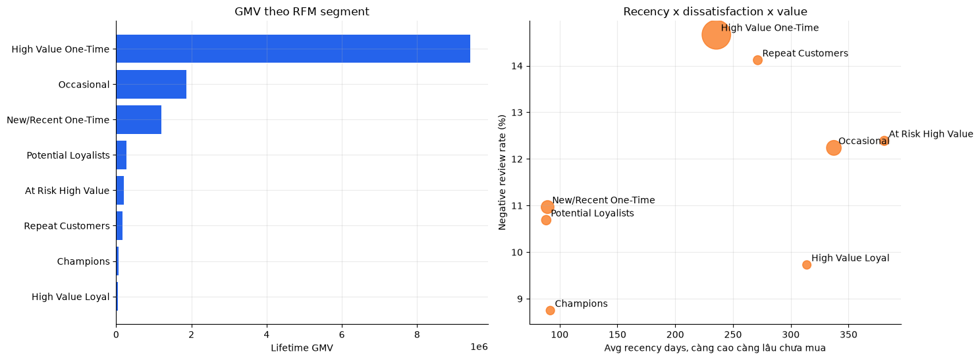
View full size ↗📊 Power BI Dashboard Gallery
Power BI connects to Snowflake DWH views and renders a multi-page BSC dashboard suite. Semantic Views expose pre-joined dimension-fact combinations, and a DAX-generated Date Table enables time intelligence measures (YTD, MoM, period comparisons).
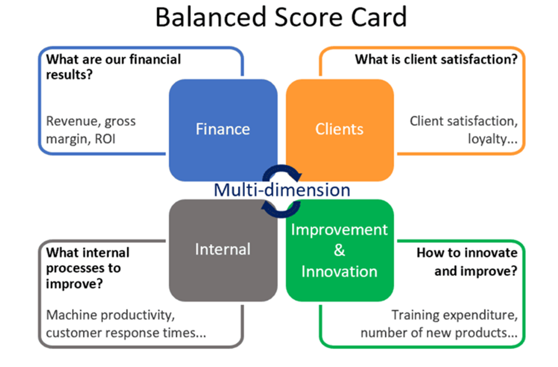
View full size ↗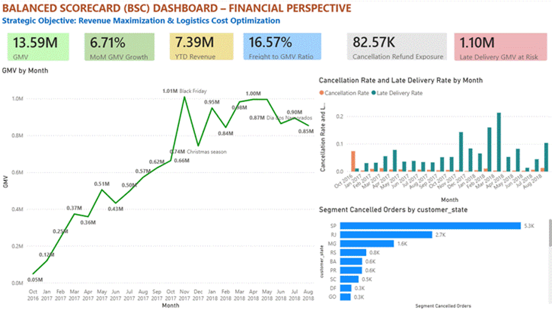
View full size ↗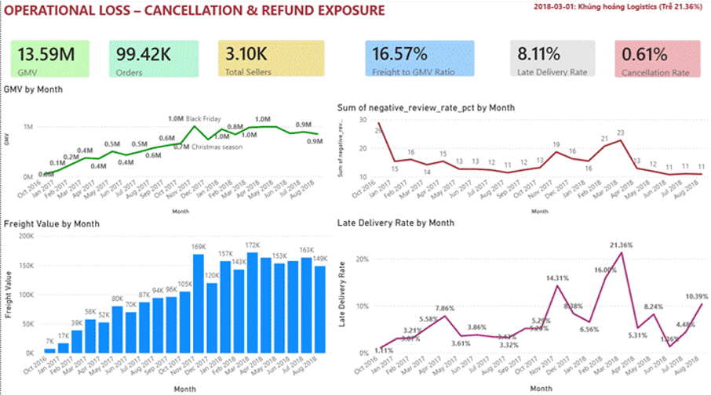
View full size ↗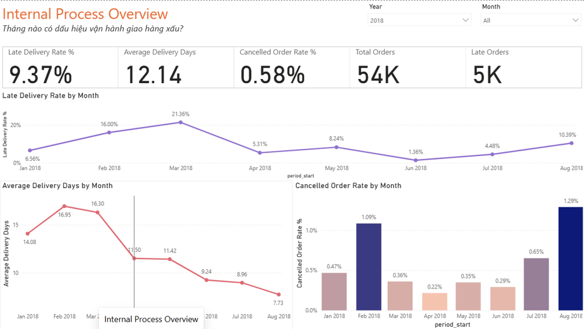
View full size ↗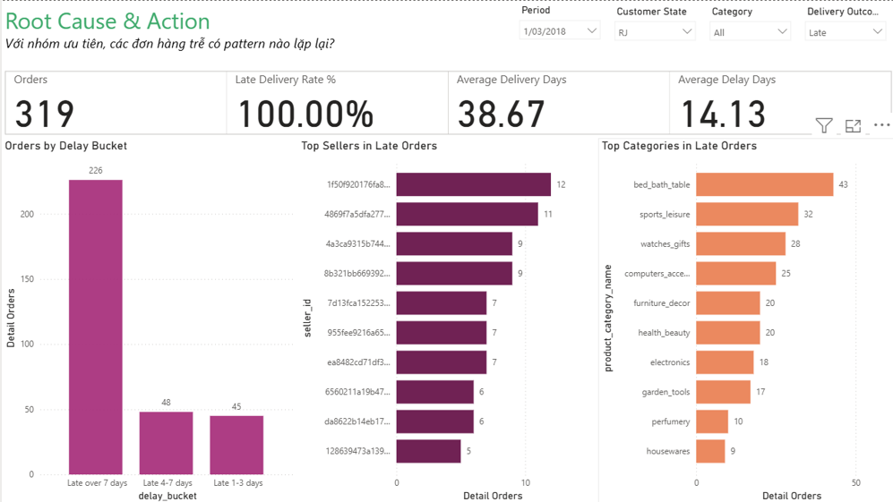
View full size ↗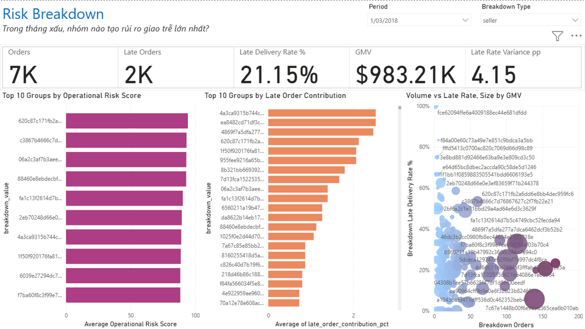
View full size ↗